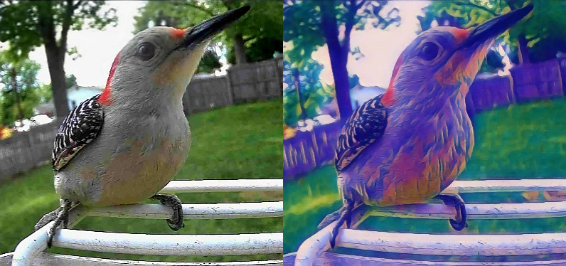

Interpretation: Translating Methodology to Code at Scale

Translating scientific methodology into production code is always a challenge, but a worthwhile one: the result is an explicit, auditable, and reproducible implementation. The real difficulty is scale. Large research and data compilation projects often incorporate dozens of datasets and a wide range of methods — data extraction and transformation, calculations, modeling, visualization. These methods are frequently similar enough to demand structure but different enough to resist full functionalization; the nuances across data structures or analytical approaches prevent a standard set of functions from covering everything. The result is sprawling code, and the time required to build it — let alone test and tune it — can be prohibitive. It’s not uncommon for that front-loaded cost to dissuade researchers, scientists, and regulatory specialists from investing in more efficient systems, leaving them to persist with older, less efficient methods instead.
This post describes a proof-of-concept approach to making that scaling easier by creating a direct link from written methodology to code: a paired set of Claude skills — a Methodology Parser and an R GHG Coder — that work together to convert a narrative methodology into structured, pipeline-ready R code. These tools are not production-ready, and I’ll be honest about what they don’t yet do. But the underlying concept is worth articulating carefully: the methodology narrative is not just documentation — it’s infrastructure that makes the code possible.
For this proof-of-concept, I built these skills to parse and encode methodology from the Inventory of U.S. Greenhouse Gas Emissions and Sinks. I chose this application because I have an existing body of tested, working R code covering a subset of Inventory categories, and that code serves as the essential template the GHG Coder uses to translate new methodologies from the Inventory narrative. The techniques used here could in principle be applied to similar skills for analogous purposes elsewhere.
The problem with implicit methodology
Using the GHG inventory as our example, a typical workflow for creating a coded Inventory looks something like this: a programmer reads a methodology chapter, engages with a source lead (i.e., specialist in the Inventory category), reads other compilation instructions, or otherwise learns the steps of compiling the inventory. The programmer then mentally extracts the relevant calculation steps, and writes code (or creates an Excel workbook) that implements those steps. The methodology document and the code then live as separate artifacts, loosely coupled at best. Over time, the code drifts from the documented methodology, or the methodology is updated without a corresponding code change, or the compiler who held the connection in their head moves on.
This is a recognized problem, but the standard response (update the documentation) understates the structural nature of the issue. The problem isn’t that people are bad at documentation. It’s that documentation and implementation are treated as two separate tasks, performed in sequence, with no formal relationship enforced between them. Sometimes there are even documents detailing the compilation methodology in addition to the published methodology, exacerbating this problem.
What if the methodology narrative were the primary artifact, from which implementation is derived?
The paired skill approach
The two tools work in sequence:
The Methodology Parser takes a narrative section from an inventory methodology document — the kind of dense, prose-and-formula text you’d find in an EPA or IPCC methods chapter — and converts it into a structured, language-agnostic implementation framework. This is not a summary. It’s a formal decomposition: inputs and outputs named, calculation steps numbered, data sources identified, ambiguities flagged explicitly. The output is plain English, but it’s written to be unambiguous enough to guide implementation in any environment.
The R GHG Coder takes that structured framework as its input and produces pipeline-ready R code following a specific set of project conventions: get_-prefixed functions, tidyverse throughout, {targets}-compatible structure, {purrr} for iteration, and a named constants vector for emission factors and GWPs. Gaps in the framework don’t get silently filled — they become # TODO: comments in the output, keeping the ambiguity visible rather than burying it in an assumption.
The critical design choice is that the Coder takes the Parser’s output as its input, not the original methodology text. This enforces a clean separation: the Parser is responsible for extracting and structuring methodological intent; the Coder is responsible for implementing it faithfully. Neither tool tries to do both at once.
What this looks like in practice
Here’s a condensed sketch of the workflow. A compiler provides the Parser with a methodology section — say, the CH4 emissions from open burning of agricultural residues, IPCC 2006 Tier 1. The Parser produces something like:
Step 3. Calculate methane emissions by crop type and year. Multiply area burned by the crop-specific burning fraction, dry matter content, combustion factor, and methane emission factor. Sum across crop types within each year to obtain annual national CH4 emissions. Inputs: area burned by crop type and year; burning fraction, dry matter content, combustion factor, and CH4 emission factor (all crop-specific constants) Output: annual CH4 emissions by crop type, aggregated to national total
The Coder then receives this framework in full and produces a get_ch4_open_burning() function that implements step 3 as a tidyverse pipeline — with constants["ef_ch4_crop"] referenced by name, a group_by(year) %>% summarize() for the aggregation, and a # TODO: wherever the framework left a join key or column name unspecified.
The methodology and the code are now formally linked. If the methodology chapter is updated, the Parser can be re-run to produce a revised framework, and the Coder can identify where the implementation needs to change.
Honest caveats
A few things this approach does not currently do well, and where I see the gaps:
The Parser output quality depends on input quality. Methodology chapters vary enormously in how clearly they specify their calculation steps. Ambiguous or terse source text produces ambiguous frameworks, which the Coder then propagates into # TODO: comments rather than code. That’s the right behavior — but it means the tool is most useful when the underlying methodology is already reasonably well-specified.
The Coder reflects a specific project’s conventions. The R code it produces follows my own codebase’s conventions — {targets}, {purrr}, a particular function naming scheme, a specific approach to constants handling. This is a feature for that project, but it means the tool is not immediately portable to a different team’s codebase without adapting the skill’s instruction set.
Neither tool handles uncertainty quantification yet. Approach 1 error propagation, Monte Carlo variance estimation, and the uncertainty annex reporting requirements are all methodologically significant but not yet in scope. A production tool would need to address this.
The loop isn’t fully closed. Ideally, the Narrator skill — which runs in the other direction, translating R scripts back into plain-language methodology narratives — would complete a round-trip: methodology → framework → code → narrative → review → updated methodology. That feedback loop exists conceptually but isn’t formally implemented.
Why the narrative is the right primary artifact
I want to expound a bit on why this matters beyond these specific tools.
Typically, methodology and codebases are only theoretically linked; the strand that connects a methodological step to a line of code is strictly conceptual, and it dissipates as soon as the code is written. Thereafter, we can only assume the code is following the methodology. A reviewer can read the methodology and read the code, but unless someone documented the mapping, they can’t verify that the code actually implements what the methodology specifies. That verification gap is where errors may hide.
Treating the structured methodology narrative as a primary artifact — something produced deliberately, before implementation, and maintained alongside the code — changes the verification problem. The question shifts from “does this code match the methodology?” (hard to answer) to “does this framework correctly interpret the methodology, and does this code correctly implement the framework?” (two easier questions, each independently reviewable).
That’s the core concept this proof of concept is trying to demonstrate. The LLM assistance is useful, but it’s almost incidental to the structural point: the narrative has to be there, it has to be structured, and it has to be formally connected to the implementation. The tools just make that more tractable to produce.
There’s a longer-term implication worth naming. The Parser’s job is to impose structure on a narrative that wasn’t written with implementation in mind. Ideally, that job becomes unnecessary. If source leads were to craft structured methodology narratives from the outset — step-by-step, unambiguous, written for compilation — the Coder could work directly from those narratives, with no parsing step required. Those same narratives could then serve as the backbone of the traditional Inventory chapter text intended for general readers. In this vision, the structured narrative is the single primary artifact: it drives the code, it drives the documentation, and it connects both to the underlying science.
The skills described here are part of an ongoing project to build reproducible, auditable GHG inventory infrastructure in R. The HFC Reporting Tool and Syrinx QC package are related work. Code and documentation are available at github.com/joewcorra.